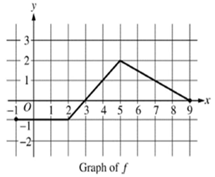

Evaluate \lim_{h \rightarrow 0}\dfrac{\sec(3(x + h)) - \sec(3x)}{h}
Let f be the function given by f(x) = \left\{ \begin{array}{lr} 2x + 3b &\text{ if }x \leq 2 \\ 3ax^{2} &\text{ if }x > 2 \end{array} \right. What are all values of a and b for which f is differentiable at x = 2 ?
If the function f is continuous for all real numbers and if f(x) = \dfrac{x^{2} - 25}{x - 5} when x \neq 5, then f 5) =
Evaluate \lim_{x \rightarrow e}\dfrac{\ln 2x - \ln 2}{x - e}
Evaluate \lim_{x \rightarrow 0}\dfrac{1 - \cos x}{x^{2} + \sin(4x)} =
If f is the function defined f(x) = \left\{ \begin{matrix} x^2\text{ for }x < 3 \\ \dfrac{1}{3}\text{ for }x \geq 3 \end{matrix} \right. then \displaystyle \int_{- 2}^{4}f(x)dx is
Evaluate \displaystyle \int_{0}^{3}\dfrac{x^{2} + 5x + 6}{x + 2}dx =
Evaluate \displaystyle \int \dfrac{\cos{\left(\sqrt{x} + 1\right)}}{\sqrt x}\; dx =
Evaluate \displaystyle \int\dfrac{2x}{x^{2} + 9}dx =
The function g is continuous on the closed interval \lbrack 2,10\rbrack. If \displaystyle \int_{9}^{1} g(x)dx = 25 and \displaystyle \int_{1}^{5}\frac{g(x)}{2} \; dx = - 12, then \displaystyle \int_{5}^{9} g(x) \; dx =
Using the substitution u = 2x^{2} + 1, the integral \displaystyle \int_{2}^{4}2x\left( 2x^2+1 \right)^{3} \; dx is equal to which of the following?
Evaluate \displaystyle \int\dfrac{9x+1}{(2x + 1)(x - 3)} \; dx
Evaluate \displaystyle \int\dfrac{1}{x^{2} - 16x + 80} \; dx =
The graph of a piecewise linear function f is given.

What is the value of \displaystyle \int_{1}^{7}\left( 4f(x) - 1 \right) \; dx ?
Evaluate \displaystyle \int_{1}^{\infty}xe^{-(x^{2}-1)} \; dx
Integrate \int x^3 e^{2x} \; dx